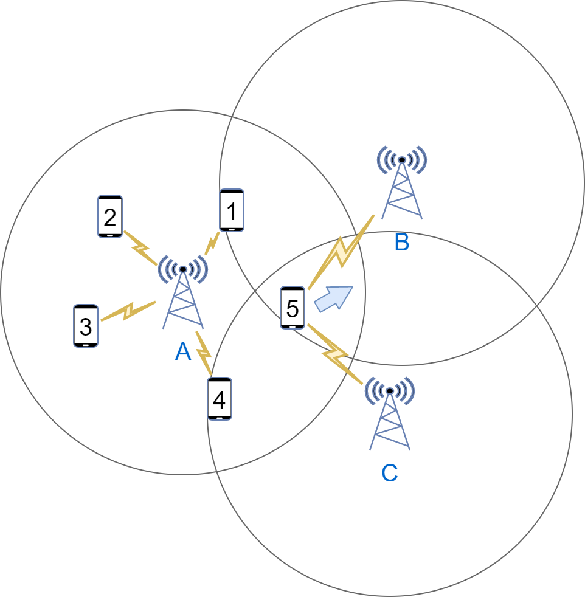
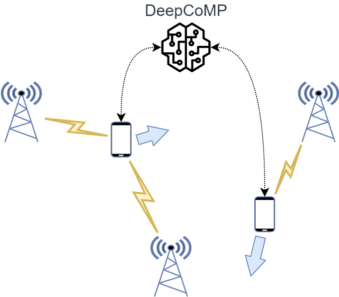
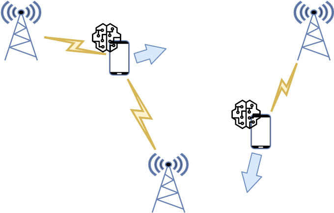

In the last year, I have worked a lot on mobility management and cell selection in mobile networks, which is very relevant for upcoming 5G networks and beyond. In this blog post, I try to give a brief, high-level overview of my research, describing what cell selection is, why it is important yet challenging. I also outline how I solved the cell selection problem with modern self-learning techniques and visualize the outcomes.
The whole blog post is meant for people who are interested but do not have a scientific background or extensive knowledge in the area. The corresponding research paper is accepted at 2023 IEEE Transactions on Network and Service Management (TNSM); a preprint is available here.
Either way, if something is unclear, or you have open questions, feel free to reach out to me. My contact information is on my website.
What is (multi-)cell selection and why is it important?
We use mobile networks every day, where our phones connect to cell towers nearby to send and receive data. While there are many influencing factors, we generally have a better signal and higher data rates when we are closer to the connected cell tower. The farther we are away, the worse the signal gets. When we are far away from the connected cell tower and in between multiple cells (called “cell edge”), the received signal is typically rather bad, which results in low and unreliable data rates. However, high and reliable data rates are crucial for current and upcoming services like video streaming, augmented or virtual reality, and cloud gaming.

One option to increase the received data rate, particularly at the cell edge, was introduced in 4G/LTE and is called coordinated multipoint (CoMP). Among other features, CoMP allows users to connect to and receive data from multiple cells simultaneously. Compared to previous mobile networks (1G, 2G, and 3G), which only allowed connecting to a single cell, joint transmission from multiple cells with CoMP leads to significantly higher data rates. This is illustrated in the figure above for user 5.
In 5G and beyond, joint transmission from multiple cells with CoMP will become increasingly important as users want higher and higher data rates, and the trend is towards many, small and partially overlapping cells. Since users move around these cells and cell sizes might be quite small, we need to frequently adjust which users are connected to which cells, which is called “cell selection”. In CoMP with joint transmissions, users can connect to and receive data from multiple cells, thus I refer to it as “multi-cell selection”.
What is the challenge?
Ok, so users need to connect to cells and, with CoMP, they may connect to multiple cells. What’s the problem? Why not just connect each user to the closest cell? Indeed, hat is a common approach for single-cell selection, but it does not leverage the idea of multiple connections with CoMP. For CoMP, why not simply connect each user to all cells in range or to a specific number of cells? Again, that is a fair idea, but it may lead to strong competition between users. Each user connected to a cell requires some resources, e.g., in terms of time and frequency, often called “resource blocks”. Since each cell has a limited amount of these resource blocks, connecting more users to a cell means that fewer resource blocks are available per user, i.e., these users compete for resources. In the figure above, users 1-4 are all connected to cell A and compete for resources. How each cell allocates resources to connected users (and how much) is typically unknown and may be defined in a vendor-specific, proprietary allocation scheme.
Hence, the challenge of multi-cell selection is to dynamically select a set of cells that each user should be connected to. By connecting to these cells, the user should receive data at a sufficient rate but avoid unnecessary competition with other users. As users move around, the selected set of connected cells should be adjusted dynamically. The goal of dynamic multi-cell selection is to ensure good service quality for all users.
How to solve it?
As discussed above, simple rules, e.g., for connecting to the closest cell or to all cells in range, often do not work very well or just in some scenarios. Instead, I propose three more flexible and powerful approaches for multi-cell selection using deep reinforcement learning. The main idea is that these approaches do not follow any hand-written algorithm or fixed rules but learn themselves how to optimize service quality by testing different actions and receiving rewards for good service quality. In doing so, these approaches learn themselves how to optimize multi-cell selection and adapt to any given scenario.
I propose three approaches: A centralized approach, called DeepCoMP and two distributed approaches, called DD-CoMP and D3-CoMP. The implemented prototypes (in Python) are publicly available on GitHub. The environment used for training and evaluation is published separately as open source: mobile-env (paper).
Centralized cell selection with DeepCoMP
As a centralized approach, DeepCoMP assumes global knowledge and control of all users. This means, DeepCoMP needs to collect information from all users in a central location, e.g., about users’ current connections, signal strength, etc. Similarly, DeepCoMP represents a single, centralized entity that selects cells for all users simultaneously. This is illustrated in the figure below.

Distributed cell selection with DD-CoMP and D3-CoMP
In addition to the centralized DeepCoMP approach, I also propose two distributed approaches, called DD-CoMP and D3-CoMP. These approaches use multi-agent reinforcement learning, where multiple “agents” select cells independently in parallel. Particularly, I assume one agent per user, which observes the users current connections, signal strength, etc. and selects suitable cells. Because each agent only cares about its own user, it is much simpler to implement and use than the centralized DeepCoMP approach. This is visualized in the figure below.

In reinforcement learning, such agents are initially trained, where they test and learn from many different actions, and then apply their learned policy (in the “inference” phase). In DD-CoMP training experience from all users is combined to learn cell selection more efficiently. In D3-CoMP each agent trains independently from all other agents and only uses experience from its own user. This allows to reduce communication between agents.
Outcome
I implemented prototypes of DeepCoMP, DD-CoMP, and D3-CoMP, which are available on GitHub. When evaluating these approaches, I found that they indeed learn multi-cell selection well after some training. To illustrate, DeepCoMP without any training only takes random connect/disconnect actions, which are not useful and lead to many disconnected users (shown as circles; red means bad quality):

After some training (here: 2 million train steps), it learns to select cells in a highly optimized fashion, ensuring that all users are connected and have much better quality. It connects users to multiple cells with CoMP where it is useful but not overly aggressive to avoid unnecessary competition:

Overall, DeepCoMP is able to learn non-trivial cell selection schemes that lead to good service quality for all users! Further details and systematic evaluation results are in the paper.
What next?
In future work, my proposed approaches could be further improved to learn more efficiently (e.g., with curriculum learning). They could also be extended to not only dynamically select cells for each user but to also control other parameters such as transmission power.
If you are interested, you can find more information here: